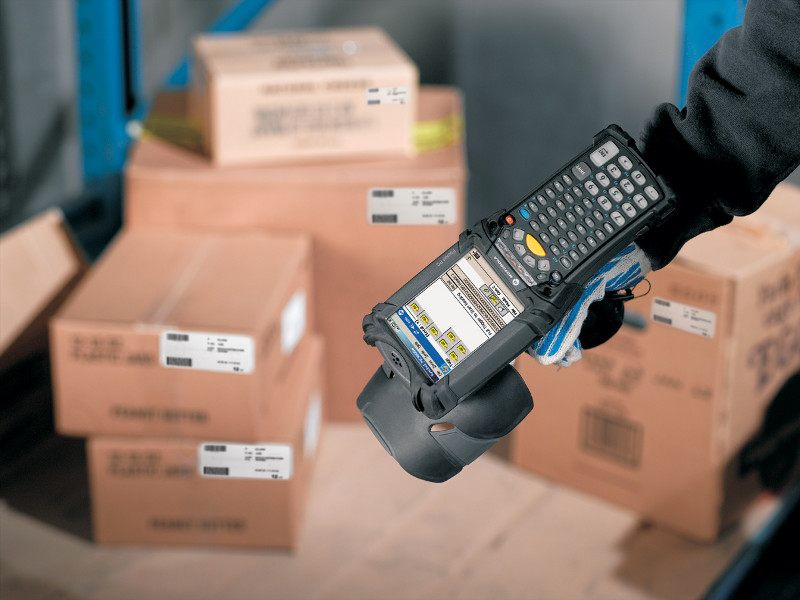
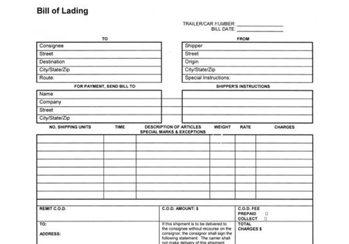
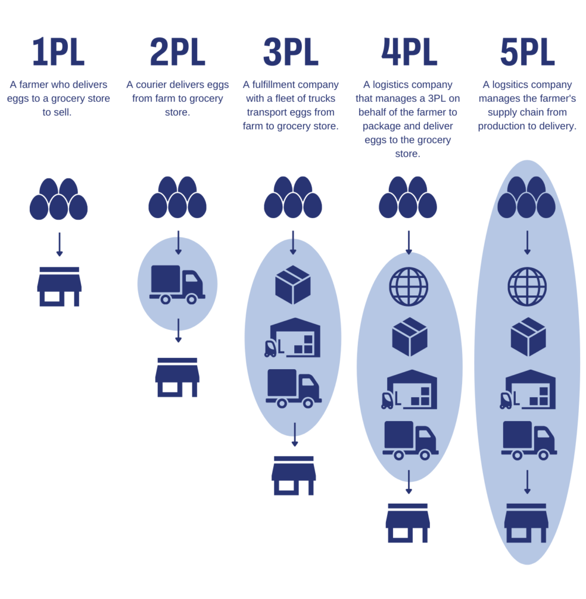

Glossary
Basic terms used in Logistics field üè¢
| ID | Name | Meaning | Photo |
|---|---|---|---|
| 1 | Invoice | A Commercial Invoice is a legal document used for processing agreements in international trade. |  |
| 2 | Inventory | The total amount of goods and materials on hand, including raw materials, work-in-progress, and finished products. |  |
| 3 | Warehouse | A facility used for storing goods and materials, often including loading docks, packing and assembly areas, and office space. |  |
| 4 | Transportation | The movement of goods from one location to another, typically by truck, train, ship, or airplane. | |
| 5 | Logistics | The process of planning, executing, and controlling the movement of goods, information, and resources from the point of origin to the point of consumption. |  |
| 6 | Supply Chain | The entire process of producing and delivering a product or service, from the raw materials to the end customer. |  |
| 7 | Distribution | The process of getting products and materials from the warehouse to the customer, including the transportation, storage, and delivery of goods. |  |
| 8 | Route Optimization | The process of finding the most efficient route for delivering goods, taking into account factors such as distance, time, and cost. |  |
| 9 | Capacity Planning | The process of determining the amount of resources (e.g. labor, equipment, and storage space) needed to meet demand. |  |
| 10 | Picking and packing | The process of selecting (picking) and preparing goods (packing) for shipment, often including the preparation of packing materials, labeling, and documentation. |  |
| 11 | Delivery | The process of physically transporting goods to the end customer, often involving the use of delivery trucks and delivery personnel. |  |
| 12 | Reverse logistics | The process of managing the return or disposal of goods, including the collection, transportation, and processing of returns, repairs, and end-of-life products. |  |
| 13 | Last-mile delivery | Last-mile delivery refers to the final stage of the delivery process, in which products are delivered to the end customer. This can be a particularly challenging aspect of logistics, as it requires navigating complex delivery routes, coordinating with multiple stakeholders, and managing customer expectations. |  |
| 14 | Distribution Center | A facility used for receiving, storing, and distributing products to retailers, wholesalers, or directly to customers. | |
| 15 | Customs Broker | A professional who assists in the clearance of goods through customs, ensuring compliance with import/export regulations. |  |
| 16 | RFID (Radio-Frequency Identification) | A technology that uses radio waves to identify and track objects, often used in inventory management. |  |
| 17 | Bill of Lading | A legal document that details the shipment of goods and serves as evidence of the contract of carriage. |  |
| 18 | 3PL (Third-Party Logistics) | Companies that provide outsourced logistics and supply chain services, including transportation, warehousing, and distribution. |  |
| 19 | Cross-docking | A logistics practice where products are transferred directly from inbound to outbound transportation without being stored in a warehouse. | |
| 20 | Incoterms (International Commercial Terms) | Standardized international trade terms that define the responsibilities of buyers and sellers in a contract. |